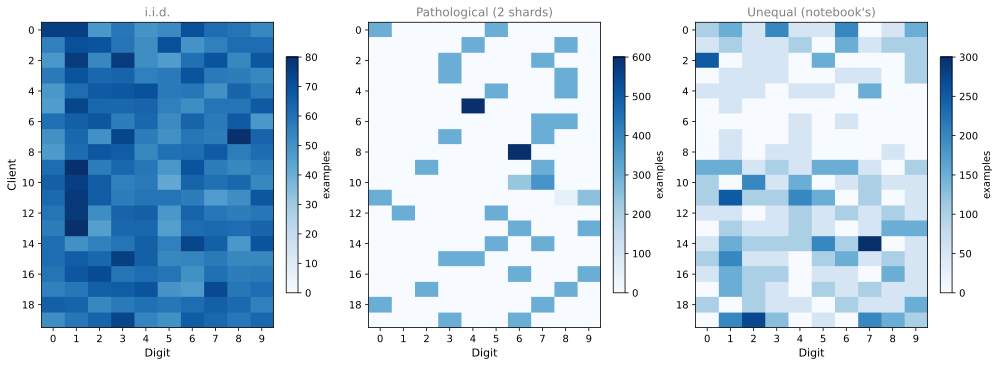
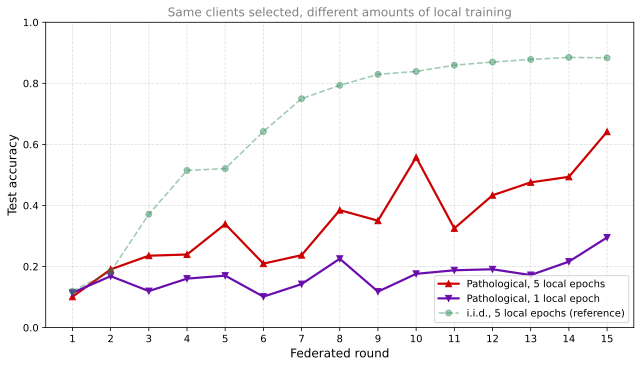

Why non-i.i.d. client data can disrupt federated averaging, what client drift is, a from-scratch FedAvg implementation that shows it, and the variants that address it.
Published
Sep 1, 2026
NoteWhere this page comes from
The rest of this section follows the Flower short course. This page draws on a separate university lecture in the reference library, which spends its closing third on the challenges of federated learning rather than on building a system that works. That is a useful counterweight, because a course that only shows the happy path leaves you unprepared for the first time a federated run does something strange.
The lab builds federated averaging from scratch in PyTorch, following a tutorial notebook from the same lecture. Every other lab in this section uses Flower, which is the right way to do this in practice. Writing the loop by hand once is worth it anyway, because when a run misbehaves you want to know what the framework is doing on your behalf.
Every page in this section so far has quietly assumed something that is almost never true. This page is about what happens when that assumption breaks, which in production is most of the time.
The assumption is about how data is spread across clients. When you split MNIST three ways or federate it with Flower, the arrangement is tidy. Real federations are not tidy, and the untidiness has a name, a mechanism, and a family of algorithms invented to deal with it.
Independent and Identically Distributed Data
Ordinary machine learning rests on an assumption so routine that most courses state it once and never mention it again. Training examples are assumed to be i.i.d., meaning independent and identically distributed. Independent says that knowing one example tells you nothing about the next. Identically distributed says that every example is drawn from the same underlying population.
Centralized training gets close to this for free. You collect everything into one pile and draw batches from it at random. Random mixing does not conjure genuine independence out of biased or duplicated data, and it cannot make two different populations into one. What it does buy is the part stochastic gradient descent actually leans on. Each batch looks statistically like the pooled dataset, so the gradient computed on one batch is a reasonable estimate of the gradient on all of it.
Federated learning cannot pool, and so it cannot mix across clients. Note the precision there, because a federated client shuffles its own data perfectly happily, and the lab below does exactly that inside local_update. What no participant can do is shuffle examples across the boundary between one client and another, because that would mean moving raw data off the device, which was the entire point of not doing it. Whatever grouping the world imposed between clients is the grouping you are stuck with.
That grouping is usually not random, because data lands on a device for a reason. Your phone’s photo library reflects your life. A hospital’s scans reflect its specialty and the population it serves. A regional bank’s transactions reflect one country’s spending habits and one country’s fraud patterns. In the language of the field, the clients hold non-i.i.d. data, and the general condition is called data heterogeneity.
Ways Data Can Be Non-i.i.d.
The single label “non-i.i.d.” covers several distinct problems that behave differently, and it is worth separating them.
Kind of skew
What differs between clients
Example
Label skew
Which classes appear, and in what proportion
One hospital sees mostly fractures, another mostly tumors
Quantity skew
How much data each client holds
One phone has 50 photos, another has 12,000
Feature skew
How the same class looks
The digit 7 written with and without a crossbar
Concept shift
What the label means for the same features
“Expensive” for a house in one city and another
A note on the last row, because the terminology trips people up. Concept shift is what is described here, a disagreement between clients at the same moment about what a label means. Concept drift is a different thing, the same distribution changing over time, and the two get used interchangeably far more often than they should.
Label skew is the kind most heavily studied and the kind the lab below demonstrates, and it is the one that damages federated averaging most reliably. It is not automatically the worst in every setting. Which kind hurts most depends on the task, the model, and how clients are sampled, and severe feature or concept shift can do more harm than mild label skew.
Review Questions
1. What does random batching actually buy centralized training, and why can federated learning not get it?
TipAnswer
It does not manufacture genuine independence, and it cannot merge two different populations into one. What it buys is the one property stochastic gradient descent actually leans on. Drawing batches at random from a single pool makes each batch resemble the pooled dataset, so a gradient computed on one batch is a reasonable estimate of the gradient on all of it. Federated learning cannot pool, so it cannot mix examples across clients, although each client shuffles its own data freely. Whatever grouping exists between clients in the world is the grouping the algorithm is stuck with, and in a real federation it is rarely random. A simulation like the lab below can of course deal the data out at random, which is exactly what makes it a useful baseline rather than a realistic one.
1. Give an example of label skew and an example of feature skew in the same federation.
TipAnswer
In a federation of hospitals, label skew would be an orthopedic center holding mostly fracture cases while a cancer center holds mostly tumor cases, so the classes appear in very different proportions. Feature skew would be the same condition looking different across sites because the hospitals use scanners from different manufacturers with different resolutions and contrast.
Client Drift
Here is the mechanism, and it follows from one detail of federated averaging that looks harmless.
In each round, a client does not take one gradient step. It runs several local epochs of training before sending anything back, which is precisely what makes federated learning affordable, since a round trip over the network costs far more than a few passes over local data.
Now put those two facts together. Each client trains for a while on data drawn from its own skewed distribution. Training for a while means moving toward the minimum of its loss surface, not the global one. A client holding only 3s and 8s does not drift a little toward a model that prefers 3s and 8s. Given enough local steps, it walks a long way toward a model that predicts almost nothing else, because on its data that model is correct.
Every selected client does this at once, in a different direction. The server then averages the results. This divergence of the local models during a round, and the fact that their average is not where any of them was heading, is called client drift.
Two consequences follow. The second is directly visible in the lab below. The first is the standard explanation for it, and note that this lab does not evaluate the individual local models, so it does not demonstrate that part on its own.
Averaging parameters is not averaging behavior. The map from a network’s parameters to the function it computes is nonlinear, so the parameters halfway between two networks do not give you a model halfway between their behaviors. Add that the loss surface is not convex, which removes any guarantee that the midpoint is a low-loss point at all, and two networks that each solve their own task well can average into one that does neither. Note that this is a possibility rather than a rule. The midpoint can be bad, not that it generally is.
Progress becomes non-monotonic. Accuracy stops climbing steadily and starts lurching, sometimes falling sharply from one round to the next. On an i.i.d. split the curve is smooth. On a badly skewed one it looks like it is being knocked around.
There is a lever you already have. The client configuration sent by the server controls how many local epochs each client runs, and that number is the drift dial. More local epochs mean fewer expensive rounds and more drift per round. Fewer local epochs mean less drift and more communication. Under heterogeneity this trade stops being a pure efficiency question and becomes a correctness question.
Review Questions
1. Explain client drift in terms of local epochs.
TipAnswer
A client runs several local epochs before reporting back, so it moves a long way toward the minimum of its own loss surface rather than taking one small step toward the global one. When each selected client does this on differently skewed data, the local models diverge, and their average is not where any of them was heading. More local epochs per round means more drift.
1. Why can averaging two well-performing local models produce a worse global model?
TipAnswer
Because the map from parameters to behavior is nonlinear, so parameters halfway between two models do not produce behavior halfway between them. On top of that the loss surface is not convex, which removes any guarantee that the midpoint is a low-loss point. Neither fact says the midpoint is usually bad, only that nothing prevents it from being bad, and under heavy skew it often is.
Lab: Federated Averaging from Scratch
Everything above is a claim. This lab builds federated averaging by hand, with no framework, and then runs it on three different splits so the claims can be checked against numbers.
ImportantSix changes from the source notebook
This lab follows a PyTorch federated learning tutorial from the reference library. It runs on PyTorch 2.13.0 and torchvision 0.28.0, and six things changed (updated 2026-09-01).
The loss pairing was tidied, though it was not a bug. The notebook’s model ends in F.log_softmax and its criterion is nn.CrossEntropyLoss, which applies a log-softmax of its own. That looks like a double application, and it is worth knowing why it is harmless. Log-softmax is idempotent, meaning applying it to something already log-softmaxed returns the input unchanged, so the two losses agree to floating-point precision and produce identical gradients. This lab uses nn.NLLLoss, which is the honest partner for a model returning log probabilities, but the change is readability rather than correctness. The notebook trains exactly as fast either way.
Shard apportionment is now exact. The notebook rounds each client’s share of the shards independently, so the total can drift off the 1,200 available. Depending on the seed that either strands shards or silently truncates the last clients. This lab uses largest-remainder apportionment and asserts that every split is a genuine partition of all 60,000 images.
Averaging is now weighted by client dataset size. The notebook’s average_weights takes a plain unweighted mean, which does not match federated averaging as published, where each client’s contribution is weighted by how much data it holds. Since the notebook’s own non-i.i.d. splitter gives clients wildly unequal amounts, the difference is real. Both versions are implemented here and compared.
dataset.train_labels was replaced with dataset.targets. The old attribute was removed from torchvision.
The device is chosen at runtime. The notebook hardcodes cuda. This page renders on a machine without a GPU.
Test accuracy is measured every round. The notebook tracks only training loss, which cannot show client drift. Drift is a statement about the global model, so the global model has to be evaluated.
The split functions, the CNN architecture, the local client update loop, and the structure of the server loop are the notebook’s own.
Setup
MNIST is loaded exactly as the earlier labs in this section load it, from a local MNIST_data/ cache. The four raw archives are also hosted on this site if you would rather populate that cache by hand than let torchvision fetch them. The accuracies printed below came from a CPU run, and a different device or a different PyTorch build can move the exact figures even with the seeds fixed.
A federated experiment needs a rule for deciding which training examples belong to which client. That rule is the experiment. Three of them are built here.
The i.i.d. split is the easy case and the one to measure everything else against. Shuffle all 60,000 images and deal them out like cards, so every client gets 600 images covering all ten digits in roughly the proportions of the full dataset.
def iid_split(n_clients, seed=0):"""Shuffle everything and deal it out. Every client looks like every other.""" rng = np.random.default_rng(seed) idx = rng.permutation(len(trainset))return {i: idx[i::n_clients] for i inrange(n_clients)}
The pathological split is the standard worst case from the federated learning literature. Sort the entire dataset by digit, cut the sorted run into 200 contiguous shards, and give each client 2 shards at random. Because the data was sorted first, a shard is nearly all one digit, so a client ends up holding one to three digits and nothing else.
def pathological_split(n_clients, shards_per_client=2, seed=0):"""Sort by label, cut into shards, give each client a couple of shards. Sorting first is what makes a shard nearly pure, and purity is the point.""" rng = np.random.default_rng(seed) num_shards = n_clients * shards_per_client shard_size =len(trainset) // num_shards order = np.argsort(LABELS, kind="stable") pool = rng.permutation(num_shards)return { i: np.concatenate([ order[s * shard_size:(s +1) * shard_size]for s in pool[i * shards_per_client:(i +1) * shards_per_client] ])for i inrange(n_clients) }
The unequal split is the notebook’s own, and it adds quantity skew on top of label skew. The sorted data is cut into 1,200 small shards, and each client is given a random number of them between 1 and 30, so client sizes range from about 50 images to well over 1,000.
def unequal_split(n_clients, seed=0, num_shards=1200, shard_size=50, min_shards=1, max_shards=30):"""Label skew with quantity skew on top, so clients differ in how much data they hold as well as which digits.""" rng = np.random.default_rng(seed) order = np.argsort(LABELS, kind="stable")# Draw a rough size per client, then apportion the shards exactly.# Rounding each share independently would let the total drift off 1200,# which either strands shards or silently starves the last clients.assert num_shards >= n_clients, "every client needs at least one shard" raw = rng.integers(min_shards, max_shards +1, size=n_clients).astype(float) share = raw / raw.sum() * num_shards sizes = np.maximum(1, np.floor(share).astype(int)) residual = num_shards - sizes.sum()if residual >0:# Largest remainder: the leftover shards go to the biggest fractions.for i in np.argsort(-(share - np.floor(share)))[:residual]: sizes[i] +=1elif residual <0:# The minimum-of-one floor overshot. Take the excess back from the# largest clients, never dropping anyone below one shard. Guarding the# sign matters: a negative count in a slice would silently index from# the end and increment almost everybody.for _ inrange(-residual): eligible = np.where(sizes >1)[0] sizes[eligible[np.argmax(sizes[eligible])]] -=1assert sizes.sum() == num_shards and sizes.min() >=1 pool =list(rng.permutation(num_shards)) groups = {}for i inrange(n_clients): picked = [pool.pop() for _ inrange(sizes[i])] groups[i] = np.concatenate([order[s * shard_size:(s +1) * shard_size]for s in picked])assertnot pool, "every shard must be assigned"return groupsgroups_iid = iid_split(NUM_CLIENTS)groups_path = pathological_split(NUM_CLIENTS)groups_uneq = unequal_split(NUM_CLIENTS)for name, g in [("i.i.d.", groups_iid), ("pathological", groups_path), ("unequal", groups_uneq)]: sizes = [len(g[i]) for i inrange(NUM_CLIENTS)] digits = [len(set(LABELS[g[i]].tolist())) for i inrange(NUM_CLIENTS) iflen(g[i])] assigned = np.concatenate([g[i] for i inrange(NUM_CLIENTS) iflen(g[i])])# Every split must be a genuine partition: all 60,000 images, none twice.assertlen(assigned) ==len(np.unique(assigned)) ==len(trainset)print(f"{name:>13}: sizes {min(sizes):>4} to {max(sizes):>5}, "f"distinct digits per client {min(digits):>2} to {max(digits):>2}, "f"total {len(assigned)}, all distinct")
i.i.d.: sizes 600 to 600, distinct digits per client 10 to 10, total 60000, all distinct
pathological: sizes 600 to 600, distinct digits per client 1 to 3, total 60000, all distinct
unequal: sizes 50 to 1150, distinct digits per client 1 to 10, total 60000, all distinct
Read that output before going further, because it is the whole experiment in three lines. Under the i.i.d. split every client holds all ten digits. Under the pathological split a client holds one to three, and note that every client still holds exactly 600 images, which is deliberate. Holding the quantity fixed means any damage that split does is attributable to label skew alone. The unequal split then adds quantity skew on top, with client sizes running from 50 to 1,150, a factor of twenty-three.
Seeing it directly is more convincing than the summary.

How many examples of each digit the first twenty clients hold, under each split
The left panel is a flat wash, since every client holds a bit of everything. The middle panel is almost entirely white with one to three dark cells per row, and each row is a client that has never seen most of the ten digits. The right panel adds rows of visibly different intensity, which is the quantity skew.
Model and the Local Client Loop
The model is the notebook’s small convolutional network. Nothing about it is special, and that is deliberate, since any effect seen here is a property of the federation rather than of the architecture.
class CNN(nn.Module):def__init__(self):super().__init__()self.conv1 = nn.Conv2d(1, 10, kernel_size=5)self.conv2 = nn.Conv2d(10, 20, kernel_size=5)self.fc1 = nn.Linear(320, 50)self.fc2 = nn.Linear(50, 10)def forward(self, x): x = F.relu(F.max_pool2d(self.conv1(x), 2)) x = F.relu(F.max_pool2d(self.conv2(x), 2)) x = x.flatten(1) x = F.relu(self.fc1(x))return F.log_softmax(self.fc2(x), dim=1)# The model returns log probabilities, so NLLLoss is the matching API.# The notebook's CrossEntropyLoss pairing applies log-softmax a second time,# which is harmless because the operation is idempotent. Same gradients,# same speed. This is a readability change, not a fix.criterion = nn.NLLLoss()
Now the client side. This function is what runs on a phone or inside a hospital. It receives a copy of the current global model, trains it on data the server will never see, and hands back the updated parameters together with a count of how many examples it used.
That count is not bookkeeping. It is what makes the server’s average correct.
def local_update(model, idxs, local_epochs=5, batch_size=128, lr=0.01):"""One client's share of a round. Returns updated weights and the number of examples they were computed from.""" loader = DataLoader(Subset(trainset, idxs), batch_size=batch_size, shuffle=True) optimizer = torch.optim.SGD(model.parameters(), lr=lr) model.train()for _ inrange(local_epochs):for images, labels in loader: images, labels = images.to(device), labels.to(device) optimizer.zero_grad() loss = criterion(model(images), labels) loss.backward() optimizer.step()return model.state_dict(), len(idxs)
Note the local_epochs=5. Five full passes over local data happen before anything is reported. That parameter is the drift dial from the previous section.
Server Loop
The server does three things. It picks clients, it waits, and it averages. The averaging is the only interesting part.
def average_weights(weights, counts=None):"""Federated averaging. With counts, each client is weighted by how much data it trained on, which is FedAvg as published. Without counts, every client counts equally, which is what the source notebook does."""if counts isNone: counts = [1] *len(weights) total =sum(counts) avg = copy.deepcopy(weights[0])for key in avg.keys():# Every entry in this model's state dict is floating point. A model with# batch normalization also carries an integer `num_batches_tracked`# buffer, which must not be averaged this way; adapt with care. avg[key] =sum(w[key].float() * n for w, n inzip(weights, counts)) / totalreturn avg
The difference between those two branches is worth pausing on. Suppose a round selects one client holding 1,200 images and another holding 50. A plain mean gives the 50-image client equal say, so a model shaped by 50 examples carries the same weight as one shaped by twenty-four times as much evidence. Weighting by count restores the balance, and it is what makes the round optimize the sample-weighted objective that federated averaging is defined against, where every training example counts once regardless of which client holds it.
It is tempting to go one step further and say this makes a federated round equivalent to one large batch spread across machines. Resist that. The equivalence would hold if each client took a single weighted gradient step from the shared starting point. After five local epochs each client has followed its own nonlinear trajectory, and the gap between those trajectories is precisely the thing this page is about.
@torch.no_grad()def evaluate(model):"""Accuracy of the global model on the full MNIST test set.""" model.eval() correct =0for images, labels in DataLoader(testset, batch_size=2000): images, labels = images.to(device), labels.to(device) correct += (model(images).argmax(1) == labels).sum().item()return correct /len(testset)def run_federated(groups, rounds=15, fraction=0.05, weighted=True, local_epochs=5, seed=1):"""The whole algorithm. Select, broadcast, train locally, aggregate, repeat.""" torch.manual_seed(seed) rng = np.random.default_rng(seed) n_clients =len(groups) global_model = CNN().to(device) history = []for _ inrange(rounds): n_selected =max(1, int(fraction * n_clients)) selected = rng.choice(n_clients, n_selected, replace=False) local_weights, local_counts = [], []for client in selected:iflen(groups[client]) ==0:continue# Each client starts from a copy of the current global model. w, n = local_update(copy.deepcopy(global_model), groups[client], local_epochs=local_epochs) local_weights.append(w) local_counts.append(n) global_model.load_state_dict( average_weights(local_weights, local_counts if weighted elseNone)) history.append(evaluate(global_model))return history
That is the core of federated learning in about twenty lines. What Flower adds in the other labs of this section is everything around it, including parameter serialization, network transport, orchestration of clients that come and go, failure handling, and metrics collection. That surrounding machinery is most of the engineering, which is exactly why you should use a framework in practice. The algorithm itself is what is above.
Watching Drift Happen
Three runs, identical in every respect except how the data was split.
Global model accuracy per round under three data splits, with everything else held identical
The green i.i.d. curve is what a healthy federated run looks like. It climbs steadily, and the only time it moves backwards at all is two thousandths at the final round, which is noise rather than a trend.
The red pathological curve is the one to study. From round 3 onward it sits far below the others, and more tellingly it does not climb monotonically. Watch it gain ground and then lose it, most starkly from 0.558 at round 10 down to 0.325 at round 11. The likely story is that a round whose five selected clients hold complementary digits averages into something reasonable, and the next round, whose clients overlap or cover a narrow set, averages into something much worse.
That is an explanation rather than a measurement, and it is worth flagging as such. Two effects could produce this curve, and the next section separates them.
The orange unequal curve is the surprise, and it is worth not glossing over. It does not sit neatly between the other two. It tracks the i.i.d. run closely and at several rounds it is actually ahead, reaching 0.658 at round 5 where the i.i.d. run is at 0.521. It does finish behind, 0.845 against 0.883, a gap of about four percentage points. The point is the shape rather than the endpoint. This split wobbles, but it never collapses the way the red one does.
The honest reading is that this split is not skewed enough to hurt much. Its clients hold up to ten digits each, so the shards they were dealt happen to cover the label space reasonably well.
Be careful not to over-read it. This split varies label skew and quantity skew together, so it cannot tell you that quantity skew on its own is mild. Isolating that would need a split with equal label coverage and unequal sizes, which this experiment does not include. What the run does support is narrower and still useful. A split that looks visibly non-i.i.d. on a distribution plot trained almost as well as a clean one, at this seed and this configuration. Heterogeneity is a spectrum rather than a switch, the catastrophe in the red curve needs label skew taken to an extreme, and measuring where your own data sits between those two cases is worth doing before reaching for a fancier algorithm.
Separating Drift from Sampling Luck
The red curve is dramatic, but on its own it does not prove what caused it. Two different things could produce that lurching, and they are easy to confuse.
The first is client drift, the effect this page is about, which needs multiple local epochs to build up. The second is partial participation. Only five of the hundred clients take part in each round, and under the pathological split each holds one to three digits, so which five get drawn changes what the round can possibly learn. That would knock the curve around even if every client took a single tiny step.
The two are separable by experiment. Run the same pathological split again with local_epochs=1 instead of 5. Partial participation is unchanged, since the selection is identical. Only the distance each client travels before reporting is reduced.
history_path_e1 = run_federated(groups_path, local_epochs=1)print(f"{'round':>6}{'E = 5':>9}{'E = 1':>9}")for r, (a, b) inenumerate(zip(history_path, history_path_e1), 1):print(f"{r:>6}{a:>9.3f}{b:>9.3f}")def wobble(h):"""Mean size of a round-to-round change, and the worst single drop.""" d = np.diff(h)returnfloat(np.abs(d).mean()), float(d.min())for name, h in [("pathological, E = 5", history_path), ("pathological, E = 1", history_path_e1), ("i.i.d., E = 5", history_iid)]: m, worst = wobble(h)print(f"{name:>22}: mean absolute change {m:.3f}, worst single-round drop {worst:.3f}")
round E = 5 E = 1
1 0.101 0.114
2 0.191 0.168
3 0.235 0.119
4 0.239 0.160
5 0.339 0.170
6 0.209 0.101
7 0.237 0.142
8 0.385 0.226
9 0.350 0.118
10 0.558 0.176
11 0.325 0.188
12 0.433 0.191
13 0.476 0.172
14 0.494 0.216
15 0.641 0.295
pathological, E = 5: mean absolute change 0.095, worst single-round drop -0.233
pathological, E = 1: mean absolute change 0.048, worst single-round drop -0.108
i.i.d., E = 5: mean absolute change 0.055, worst single-round drop -0.002

The pathological split run with five local epochs and with one, holding client selection identical
The result leans toward the drift explanation, and the useful number is the worst single-round drop rather than the average movement.
Run
Mean absolute change per round
Worst single-round drop
Pathological, 5 local epochs
0.095
-0.233
Pathological, 1 local epoch
0.048
-0.108
i.i.d., 5 local epochs
0.055
-0.002
Holding client selection identical and cutting local epochs from five to one roughly halves the round-to-round movement and cuts the worst collapse from 23 percentage points to 11. More local training went with more volatility, which is what the drift story predicts.
Now the caveats, because this experiment is weaker than it first looks and it is worth being precise about why.
One epoch is not one step. A pathological client holds 600 examples at batch size 128, so even a single epoch is five sequential optimizer steps. The E = 1 run still contains drift. It contains less of it, not none.
Two things changed, not one. Cutting epochs reduces both how far a client travels and how much total optimization happens per round. The lower accuracy of the E = 1 run is the second effect, and the two cannot be untangled from this comparison alone.
Minibatch order is not matched.DataLoader shuffles from the global torch generator, so the two runs consume different numbers of random permutations and their per-client batch orders diverge after the first client. Client selection is identical, but the stochasticity inside local training is not.
So the residual 11-point drop at E = 1 is not cleanly “the sampling effect”. It is a mixture of partial participation, the drift that one epoch still produces, and ordinary SGD noise. Reading it as a decomposition would be over-claiming.
What the run does support is narrower. At this seed, with client selection held fixed, adding local training amplified volatility, and the i.i.d. run at the same five epochs never dropped more than two thousandths. That is consistent with drift and inconsistent with sampling being the whole story. A clean separation would need matched per-client randomness, a single-full-batch-step baseline, or a direct measurement of how far the local models diverge from each other within a round. None of those is done here.
The cost side is unambiguous. The one-epoch run ends at 0.295 against 0.641 for five epochs. Smoother, and far less learned, because it did a fifth of the local work across the same number of expensive rounds. That is the communication trade from the previous section, priced.
Does Weighting Actually Matter?
The unequal split is the one where weighting by dataset size should matter, since that is the split with clients of very different sizes. The weighted run above is already available, so only the plain-mean version needs computing.
history_uneq_plain = run_federated(groups_uneq, weighted=False)print(f"{'round':>6}{'weighted':>11}{'plain mean':>13}")for r, (a, b) inenumerate(zip(history_uneq, history_uneq_plain), 1):print(f"{r:>6}{a:>11.3f}{b:>13.3f}")print(f"\nfinal weighted: {history_uneq[-1]:.3f}")print(f"final plain mean: {history_uneq_plain[-1]:.3f}")print(f"mean over last 5 rounds, weighted: {np.mean(history_uneq[-5:]):.3f}")print(f"mean over last 5 rounds, plain mean: {np.mean(history_uneq_plain[-5:]):.3f}")
round weighted plain mean
1 0.137 0.126
2 0.151 0.278
3 0.294 0.264
4 0.573 0.498
5 0.658 0.572
6 0.680 0.641
7 0.772 0.697
8 0.683 0.668
9 0.799 0.778
10 0.826 0.813
11 0.803 0.786
12 0.855 0.822
13 0.859 0.784
14 0.859 0.859
15 0.845 0.808
final weighted: 0.845
final plain mean: 0.808
mean over last 5 rounds, weighted: 0.844
mean over last 5 rounds, plain mean: 0.812
Weighting wins, and the evidence is better than a single endpoint comparison would suggest. It is ahead in 13 of the 15 rounds, not just at the finish, and averaged over the last five rounds the gap is about three percentage points. A consistent lead across rounds is harder to explain by luck than one lucky final round would be.
It is still one seed. The 15 rounds are successive states of a single run rather than 15 independent trials, so a consistent lead across them is weaker evidence than 13 independent wins would be, and confirming the direction properly would mean repeating across several seeds.
The practical conclusion does not rest on the measurement. Weighting by example count is what federated averaging is defined to do, it makes the round optimize the objective in which every example counts once, and it costs one integer per client per round. Use it because it is the algorithm, and treat this run as an illustration rather than as the reason.
Review Questions
1. In the pathological split, why does test accuracy sometimes fall from one round to the next?
TipAnswer
Because only five of the hundred clients are selected per round, and each holds one to three digits. Which five get picked decides what the round can learn. A draw of clients covering complementary digits averages into something reasonable, and the next draw, whose clients overlap or cover a narrow set, averages into something worse. The algorithm did not change between those rounds, only the sample of clients did, and under heavy skew that sample dominates the result.
1. Why does the client return a count of examples along with its weights?
TipAnswer
So the server can weight each client’s contribution by how much data it was computed from, which is federated averaging as published. Without it, a model trained on 50 examples counts as much as one trained on 1,200, and under quantity skew that systematically distorts the global model.
1. If you cut local_epochs from 5 to 1, what would you expect to happen to the pathological curve, and what would it cost?
TipAnswer
Drift would fall, because each client would move a much shorter distance toward its own local optimum before reporting, so the models being averaged would be closer together and the curve would be smoother. The cost is communication. You would need many more rounds to reach the same accuracy, and each round is a full model broadcast and upload, which is exactly the bandwidth the section spends a page on. The control experiment above runs exactly this comparison and finds both halves of the prediction, a smoother curve and a much lower final accuracy, though it also explains why that comparison is not a clean decomposition.
Variants That Fix It
Client drift is not a fact you have to live with. It is the problem a whole line of research set out to solve, and understanding why each variant exists is more useful than memorizing what it does.
All of them keep the federated structure of the round that McMahan et al. (2016) introduced. The client still trains locally, the server still aggregates. What changes is either what the client is allowed to optimize or what the server does with what comes back.
Algorithm
The fix
Where it acts
FedProx
Adds a penalty that discourages the local model from moving far from the global one
Client
SCAFFOLD
Estimates each client’s drift direction and corrects local steps by it
Client and server
FedAvgM
Applies momentum on the server, smoothing round-to-round lurching
Server
FedAdam, FedYogi, FedAdagrad
Treats the aggregate update as a gradient and applies an adaptive optimizer
Server
FedGMA
Masks coordinates of the aggregate update where clients disagree in sign
Server
Two families are visible in that table. None of them eliminates drift, so read all of these as mitigations rather than cures.
Client-side methods reduce how much drift is produced.Li et al. (2018) proposed FedProx, which adds a proximal term to the local loss that grows with the distance between the local model and the global one it started from. It is a soft penalty, so it discourages wandering rather than preventing it, and the strength of the discouragement is a hyperparameter. Karimireddy et al. (2019) proposed SCAFFOLD, which maintains control variates, running estimates of the direction in which a client’s gradients differ from the average, and subtracts that estimate from each local step. It is listed as client and server because it keeps control state in both places and ships it alongside the model, which is where its extra bandwidth and storage cost comes from.
Server-side methods absorb drift after it arrives.Hsu et al. (2019) proposed FedAvgM, on the observation that if the aggregated update lurches from round to round, momentum is the classic cure for a lurching update, so apply it at the server. Reddi et al. (2020) generalized this into adaptive federated optimization, reinterpreting the difference between the old and new global model as a pseudo-gradient and feeding it to Adam, Yogi, or Adagrad. The reinterpretation is the clever part, because every adaptive optimizer ever written for centralized training becomes available for free. Tenison et al. (2022) proposed FedGMA, which keeps a coordinate of the aggregated update only where a sufficient share of clients agree on its sign, on the theory that disagreement across clients signals client-specific noise rather than shared structure.
Whether any of them helps on a given federation is an empirical question. Zhao et al. (2018) is the standard reference for how sharply accuracy degrades as skew increases, and it is worth reading before assuming a variant will rescue a badly skewed setup.
You do not implement these by hand. The tuning page mentioned that aggregation is a swappable component, and this is what fills that slot. In Flower, moving from FedAvg to FedAdam means handing the server a different strategy object, and nothing else in the system moves.
That cheapness is specific to the server-side family, which is worth remembering when planning a change. FedProx and SCAFFOLD alter what the client computes, so adopting either means shipping new client code and, for SCAFFOLD, new state to store and transmit. On a federation of five hospitals that is a meeting. On a federation of ten million phones it is a release cycle, and it is why the server-side options get tried first far more often than their published results alone would justify.
NoteWhich one to reach for
Try weighted FedAvg first and measure. Heterogeneity is a spectrum, and plenty of real federations are skewed enough to mention and not skewed enough to need anything fancy.
If the accuracy curve wobbles, a server-side fix is the cheaper experiment, because it changes one object on the server and requires nothing new from the clients. If the wobble persists and you control the client software, FedProx is the next step, since it adds one term to the local loss. Reach for SCAFFOLD when drift is severe and you can afford the extra per-client state and bandwidth.
Review Questions
1. What is the practical difference between a client-side fix such as FedProx and a server-side fix such as FedAdam?
TipAnswer
A client-side fix changes what the client optimizes, so it reduces how much drift is produced, but it requires deploying new code to every participating device. A server-side fix changes only how the server combines what comes back, absorbing some of the drift after the fact, and can be swapped without touching the clients at all. That deployment asymmetry usually makes a server-side fix the cheaper thing to try first. Neither family eliminates drift.
1. What does it mean to call the difference between the old and new global model a “pseudo-gradient”, and why is that reframing useful?
TipAnswer
It means treating the aggregated client update as if it were a gradient step the server is taking, even though it was produced by many clients running many local steps rather than by differentiating a loss. It is useful because it turns the server into an ordinary optimization loop, so any optimizer built for centralized training, including Adam, Yogi, and Adagrad, can be dropped straight in.
Other Challenges
Heterogeneity is the largest of the open problems but not the only one. Three others round out the picture, and each connects to a page elsewhere in this section.
Communication overhead. Every round ships a full model down and a full update back. With frequent rounds and a large model this dominates the cost of the whole system, and high network latency slows every round to the speed of its slowest participant. This is what bandwidth in federated learning is about, and it interacts directly with drift, since the obvious fix for drift is more rounds and the obvious fix for bandwidth is fewer.
Privacy and security. Model updates still leak information about the data that produced them, which is why data privacy in federated learning exists as a page. Beyond leakage there is active malice. Because the server cannot see client data, it cannot easily tell a client with unusual data from a client that is lying, and a poisoning attack exploits exactly that, submitting crafted updates to degrade the global model or plant a backdoor. Heterogeneity makes this harder to defend, since the natural defense is to reject updates that look like outliers, and under genuine heterogeneity honest clients produce outlying updates all the time.
Regulatory compliance and accountability. Federated learning is often adopted because of data protection regulation such as the GDPR in Europe or PIPEDA in Canada, and keeping data on the device helps considerably. Rieke et al. (2020) survey what this looks like in healthcare specifically, where the regulatory pressure is heaviest and the incentive to collaborate across institutions is strongest. It does not settle everything on its own, because the model updates that do travel may still carry personal information, which is one reason differential privacy gets layered on top. Separately, in finance, healthcare, and autonomous driving, a model has to be explainable and auditable, and a model assembled from updates contributed by many parties that nobody can inspect is a harder thing to account for than one trained on a dataset you hold.
Review Questions
1. Why does data heterogeneity make poisoning attacks harder to defend against?
TipAnswer
The natural defense is to reject updates that look like statistical outliers. Under genuine heterogeneity, honest clients legitimately produce outlying updates all the time, because their data really is different. Any filter aggressive enough to catch attackers also discards the contributions of unusual but honest clients, which is the exact data the federation existed to reach.
1. Reducing local epochs helps with drift. Why is it not a free fix?
TipAnswer
Because it buys accuracy with communication. Fewer local epochs means less progress per round, so many more rounds are needed, and every round costs a full model broadcast and a full update upload. The two main costs of a federated system pull in opposite directions here.
References
Hsu, T.-M. H., Qi, H., & Brown, M. (2019). Measuring the effects of non-identical data distribution for federated visual classification. arXiv. https://doi.org/10.48550/arXiv.1909.06335
Karimireddy, S. P., Kale, S., Mohri, M., Reddi, S. J., Stich, S. U., & Suresh, A. T. (2019). SCAFFOLD: Stochastic controlled averaging for federated learning. arXiv. https://doi.org/10.48550/arXiv.1910.06378
Li, T., Sahu, A. K., Zaheer, M., Sanjabi, M., Talwalkar, A., & Smith, V. (2018). Federated optimization in heterogeneous networks. arXiv. https://doi.org/10.48550/arXiv.1812.06127
McMahan, H. B., Moore, E., Ramage, D., Hampson, S., & Agüera y Arcas, B. (2016). Communication-efficient learning of deep networks from decentralized data. arXiv. https://doi.org/10.48550/arXiv.1602.05629
Reddi, S., Charles, Z., Zaheer, M., Garrett, Z., Rush, K., Konečný, J., et al. (2020). Adaptive federated optimization. arXiv. https://doi.org/10.48550/arXiv.2003.00295
Rieke, N., Hancox, J., Li, W., Milletarì, F., Roth, H. R., Albarqouni, S., et al. (2020). The future of digital health with federated learning. npj Digital Medicine, 3, 119. https://doi.org/10.1038/s41746-020-00323-1
Tenison, I., Sreeramadas, S. A., Mugunthan, V., Oyallon, E., Rish, I., & Belilovsky, E. (2022). Gradient masked averaging for federated learning. arXiv. https://doi.org/10.48550/arXiv.2201.11986